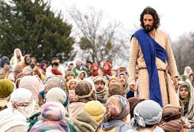

Visão Geral
Título: The Chosen
Temporadas: 4 Temporadas
Gênero: Drama e Religião
Plataforma: Netflix e app The Chosen
Classificação: 14+
Sinopse: The Chosen: Os Escolhidos é uma série de televisão que conta a história de Jesus de Nazaré a partir da perspectiva das pessoas que o conheceram, seguiram ou interagiram com ele. A série é ambientada no século I, principalmente na Judeia e na Galileia, e retrata a trajetória de Jesus através de um olhar íntimo.
Elenco Principal
Jonatham Roumie

Shahar Isaac
Paras Patel
Yoshi Barrigas
Temporada 1
A primeira temporada de The Chosen - Os Escolhidos retrata os primeiros passos de Jesus de Nazaré na sua missão de espalhar a palavra de Deus. A série se passa na Galileia do século I e mostra como Jesus forma um grupo de seguidores de diferentes origens.

Temporada 2
Um visitante misterioso procura encontrar Jesus; mas os discípulos estão hesitantes. A tensão aumenta entre Simão e Mateus. Enquanto o grupo se dirige a uma nova cidade; chega a notícia de que a fama de Jesus está crescendo.
Temporada 3
E agora? Após Jesus completar um sermão que vira o mundo de cabeça para baixo; todos os 12 discípulos (incluindo o recém-chegado Judas) estão prontos para segui-Lo até os confins da Terra. Mas os problemas persistem. Mateus sofre com o afastamento de sua família. André visita João Batista; que está aprisionado. Maria e as mulheres precisam encontrar uma fonte de renda.
